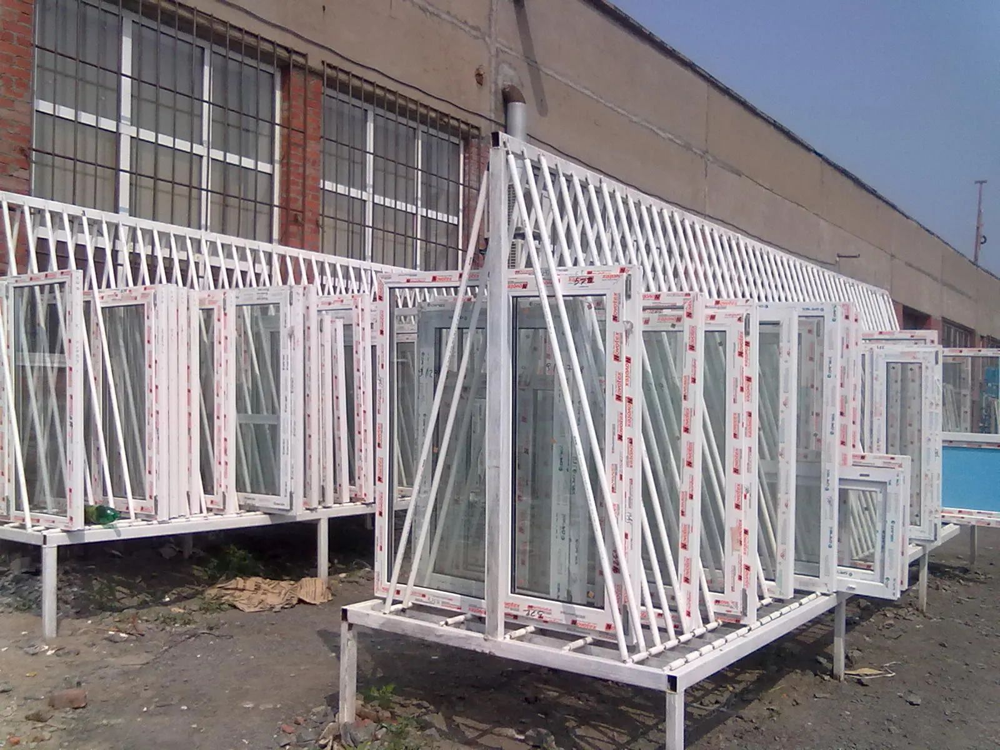
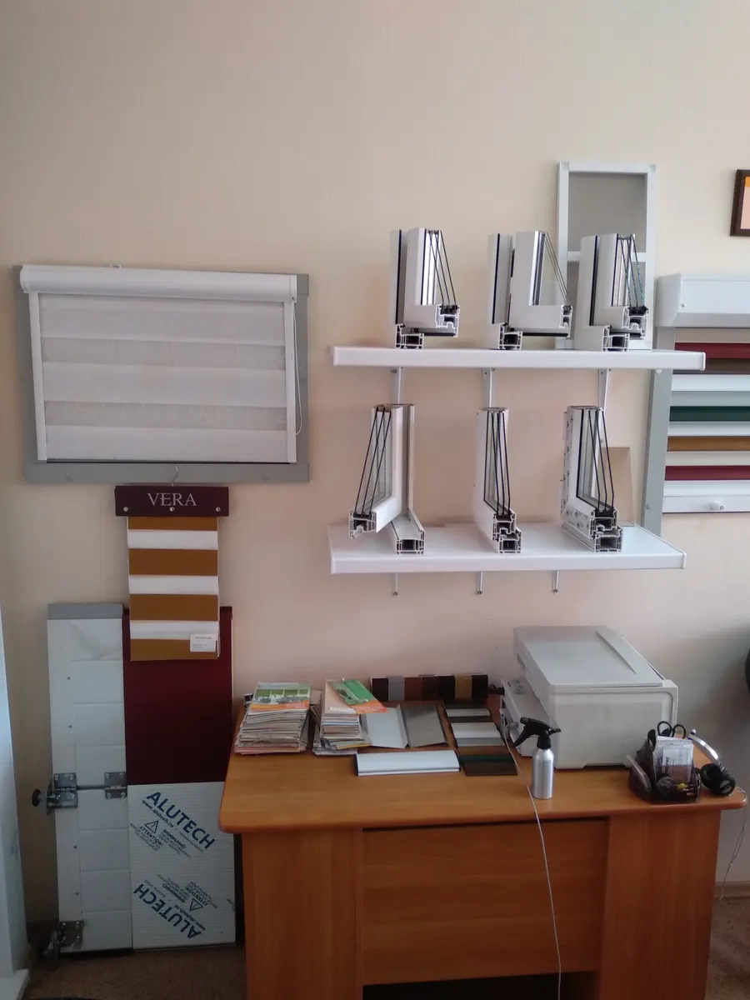
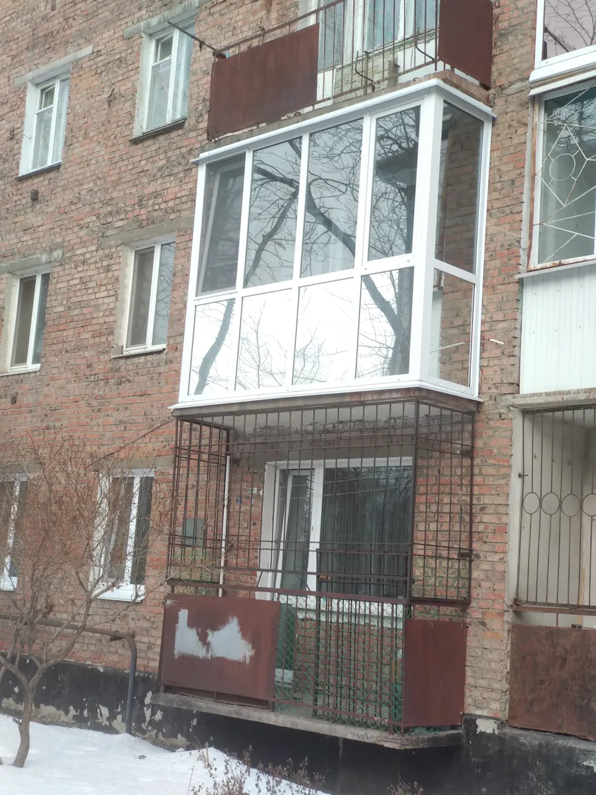
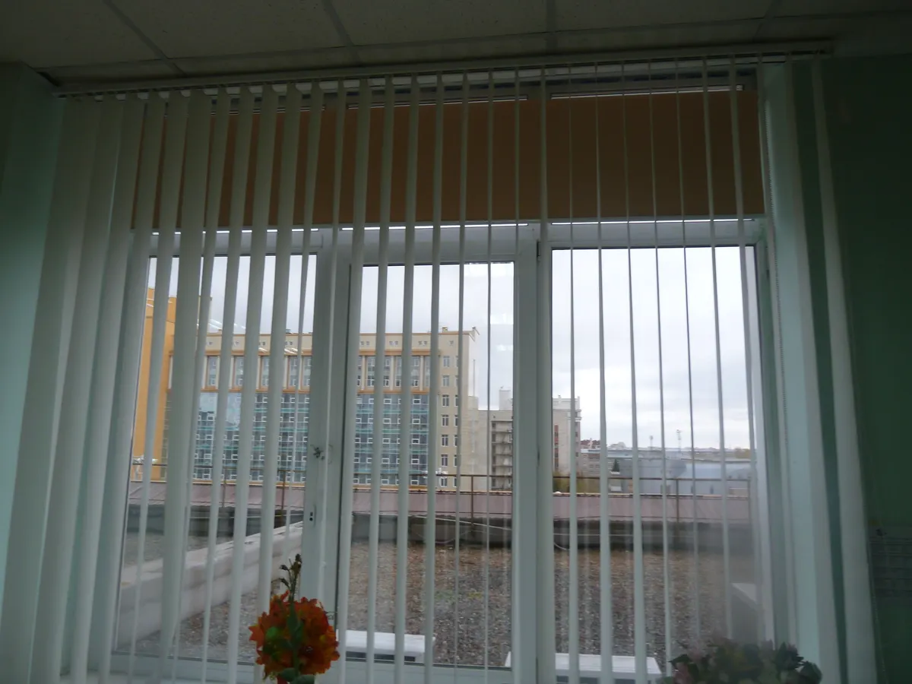

Окна · жалюзи · балконы · Омск, ул. Красный Путь, 89
Окна, жалюзи и остекление балконов в Омске
Свои жалюзи и пластиковые окна: замер, изготовление, монтаж. Ремонт окон и дверей, подоконники, откосы. Офис на Красном Пути, 89 – позвоните и расскажите, что нужно.

- Окна, жалюзи, балконы и двери – в одном месте
- Профильные системы ШМИТ, ОРТЕКС, БРЮГМАН
- Ремонт окон: уплотнитель, фурнитура, стеклопакеты
Цены с карточки на Яндекс.Картах
Цены взяты с карточки компании и давно не обновлялись – точную сумму назовут по телефону после замера.
Окна и ремонт
- Пластиковые окна под ключс монтажом, 3-, 5- и 6-камерные профилиот 1 600 ₽
- Монтаж оконных откосовПВХ-панелиот 2 900 ₽
- Замена уплотнительной резиныза створку стандартного окна1 200 ₽
- Замена и регулировка фурнитурыокна и балконные двериот 350 ₽
Жалюзи и рулонные шторы
- Вертикальные жалюзиболее 100 цветов, собственное производствоот 390 ₽ за м²
- Рулонные шторыобычные и серии Престижот 900 ₽
- Горизонтальные жалюзиклассические и Изотраот 1 250 ₽ за м²
Балконы, двери, стекло
- Остекление лоджиитёплое или холодное, гарантия 10 летот 12 000 ₽
- Остекление балконацена зависит от размераот 19 000 ₽
- Двери ПВХ, входные группыстандартные 800 × 2000 ммот 12 000 ₽
- Стеклопакетыизготовление и замена, замер и монтажот 2 700 ₽ за м²
- Подоконники Данкестоимость подоконника считается отдельноот 800 ₽ за пог. м
- Рольставни Алютехплюс монтажные работыот 5 000 ₽ за м²
Как заказать
- 01
Позвоните
+7 (3812) 48-54-05 – расскажите, что нужно: окно, жалюзи, балкон или ремонт.
- 02
Замер
Замерят проём и назовут стоимость.
- 03
Изготовление
Окна и жалюзи делают под размер, привозят к назначенному дню.
- 04
Монтаж
Устанавливают, при необходимости отделывают откосы и подоконник.



Что обещает компания
Гарантия на работы
На остекление лоджий компания даёт 10 лет гарантии (по данным карточки).
Опытные монтажные бригады
По словам компании, опыт бригад – от 8 лет.
Жалюзи собственного производства
Более 100 цветов вертикальных, более 80 – рулонных.
Отзывы с Яндекс.Карт
«Рекомендую. Выполняют много разных видов работ. Заказывала в этой компании жалюзи. Сначала вертикальные на 2х створчатое окно. Позже 2 шторы рулонные с направляющими. Делают быстро и качественно. Цены приемлемые. Понравилось всё. Большой выбор фурнитуры. Теперь вот потребовалась регулировка двери. Снова обратилась к ним.»
Наталья Замятина · 26 ноября 2021
«Ребята молодцы, посоветовали родные ставили окна и делали жалюзи на окна. Все учли (мои нестандантрные запросы))) Спасибо. Мы осалались довольны!»
Светлана Буцик · 10 декабря 2021
«Рекомендую. Высокое качество на каждом этапе работы, от первого разговора по телефону до монтажа.»
Анонимный отзыв · 9 марта 2018
Отзывы с карточки на Яндекс.Картах, без правок.
Контакты
- Адрес
- ул. Красный Путь, 89, Омск
- Часы
- Пн–Пт 10:00–17:00, сб и вс – выходной
- Телефон
- +7 (3812) 48-54-05